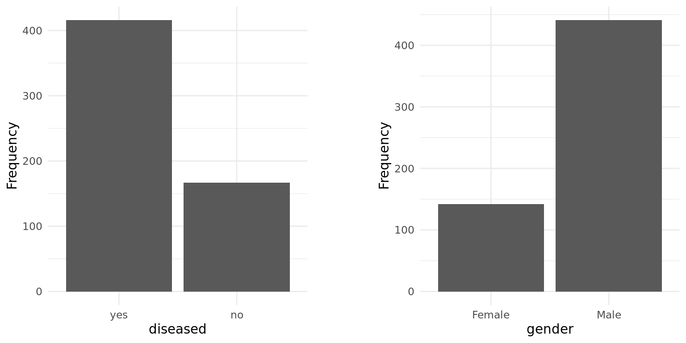
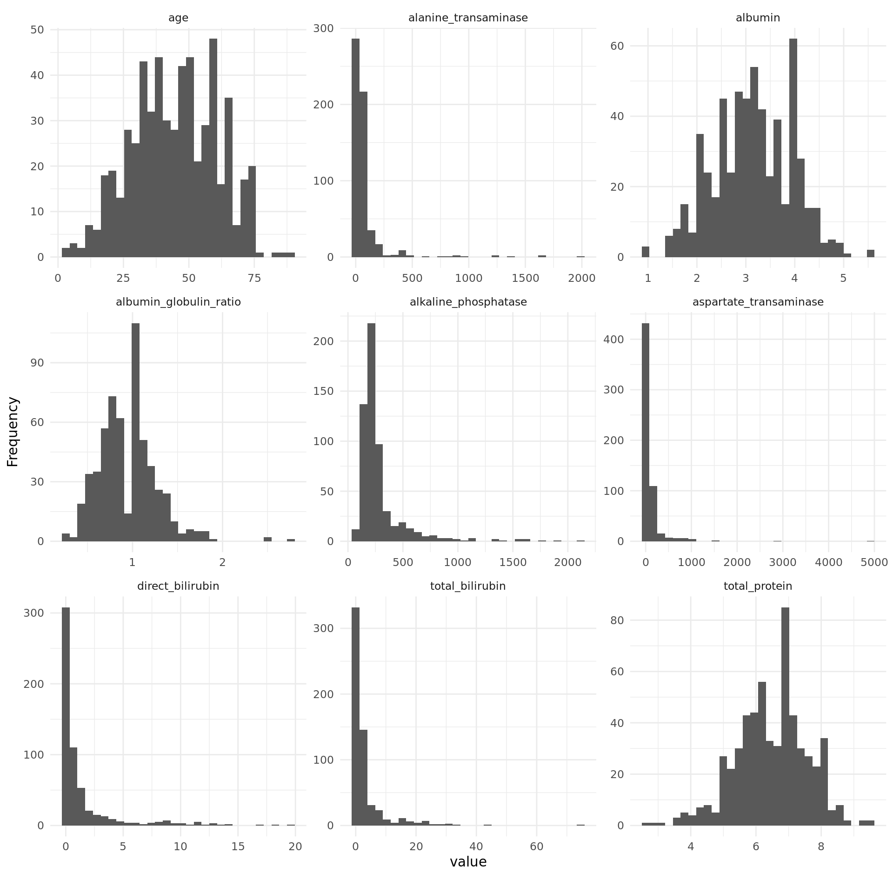
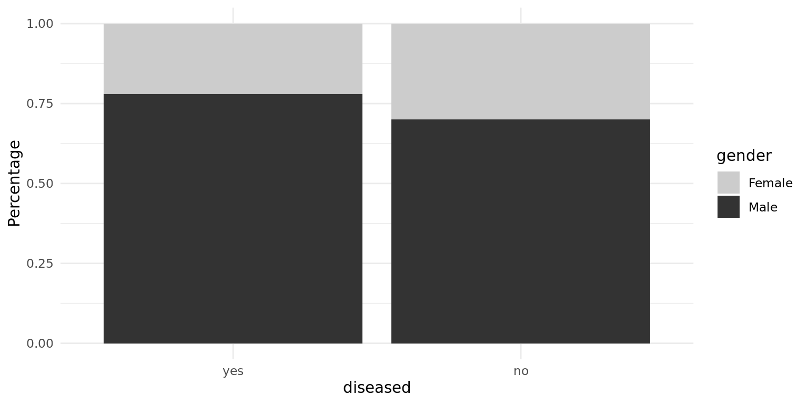
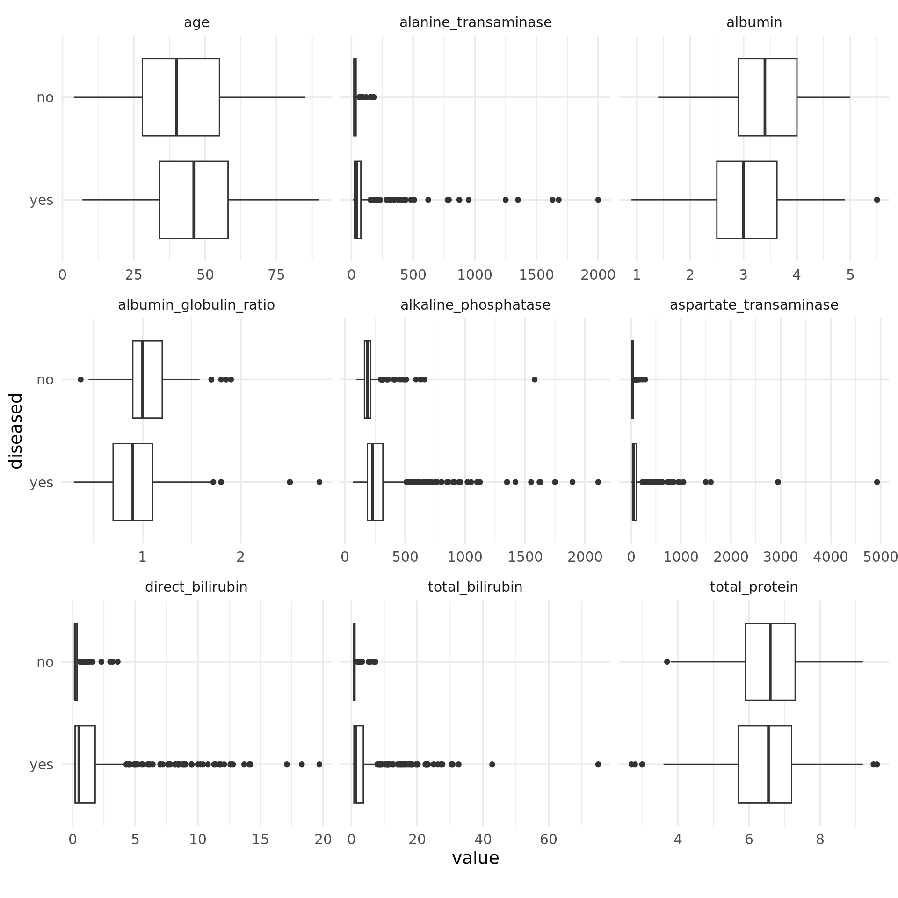
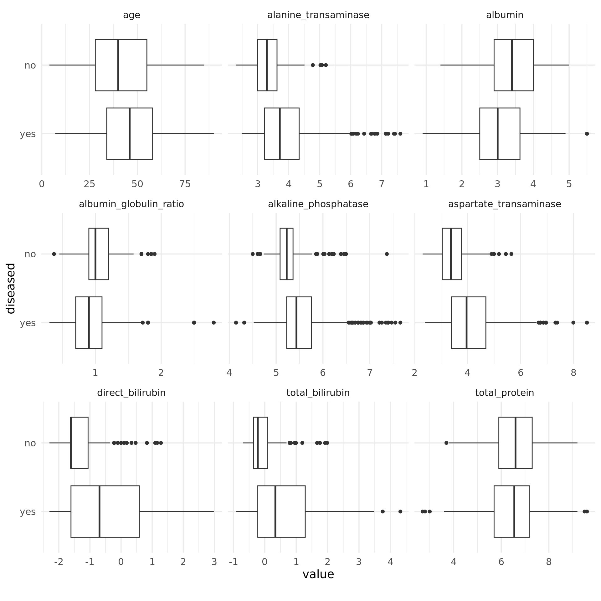
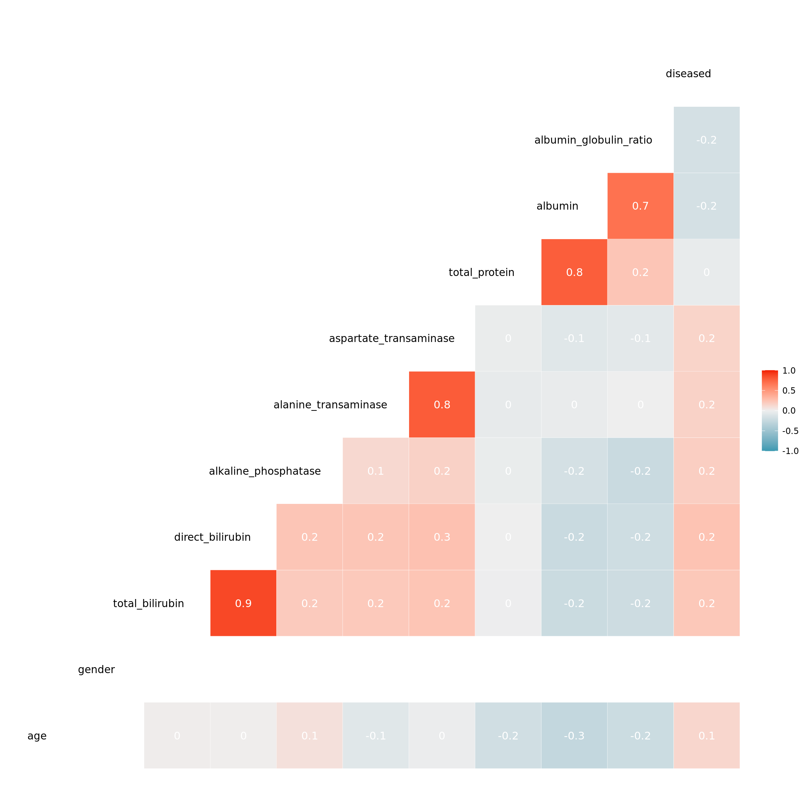
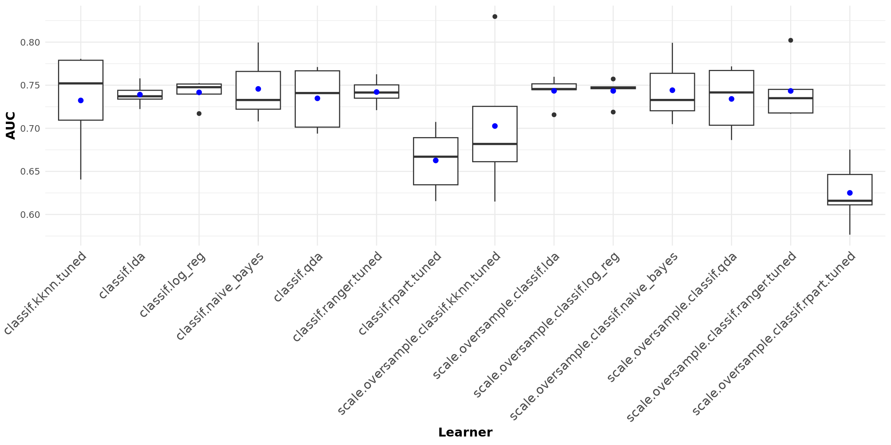

library(mlr3verse)
library(dplyr)
library(tidyr)
library(DataExplorer)
library(ggplot2)
library(gridExtra)Preamble
The following examples were created as part of the Introduction to Machine Learning Lecture at LMU Munich. The goal of the project was to create and compare one or several machine learning pipelines for the problem at hand together with exploratory analysis and an exposition of results. The posts were contributed to the mlr3gallery by the authors and edited for better legibility by the editor. We want to thank the authors for allowing us to publish their results. Note, that correctness of the results can not be guaranteed.
Prerequisites
This tutorial assumes familiarity with the basics of mlr3tuning and mlr3pipelines. Consult the mlr3book if some aspects are not fully understandable. We load the most important packages for this example.
We initialize the random number generator with a fixed seed for reproducibility, and decrease the verbosity of the logger to keep the output clearly represented.
set.seed(7832)
lgr::get_logger("mlr3")$set_threshold("warn")
lgr::get_logger("bbotk")$set_threshold("warn")Note, that expensive calculations are pre-saved in rds files in this tutorial to save computational time.
Machine learning (ML), a branch of both computer science and statistics, in conjunction with new computing technologies has been transforming research and industries across the board over the past decade. A prime example for this is the healthcare industry, where applications of ML, as well as artificial intelligence in general, have become more and more popular in recent years. One very frequently researched and applied use of ML in the medical field is the area of disease identification and diagnosis. ML technologies have shown potential in detecting anomalies and diseases through pattern recognition, even though an entirely digital diagnosis by a computer is probably still something for the far future. However, suitable and reliable models estimating the risk of diseases could help real doctors make quicker and better decisions today already. In this use case we examined machine learning algorithms and learners for the specific application of liver disease detection. The task is therefore a binary classification task to predict whether a patient has liver disease or not based on some common diagnostic measurements. This report is organized as follows. Section 1 introduces the data and section 2 provides more in-depth data exploration. Section 3 presents learners and their hyperparameter tuning while section 4, dealing with model fitting and benchmarking, presents results and conclusions.
Indian Liver Patient Dataset
The data set we used for our project is the “Indian Liver Patient Dataset” which was obtained from the mlr3data package. It was donated by three professors from India in 2012 “UCI Machine Learning Repository” (n.d.).
# Importing data
data("ilpd", package = "mlr3data")It contains data for 583 patients collected in the north east of Andhra Pradesh, one of the 28 states of India. The observations are divided into two classes based on the patient having liver disease or not. Besides the class variable, which is our target, ten, mostly numerical, features are provided. To describe the features in more detail, the table below lists the variables included in the dataset.
| Variable | Description |
|---|---|
| age | Age of the patient (all patients above 89 are labelled as 90 |
| gender | Sex of the patient (1 = female, 0 = male) |
| total_bilirubin | Total serum bilirubin (in mg/dL) |
| direct_bilirubin | Direct bilirubin level (in mg/dL) |
| alkaline_phosphatase | Serum alkaline phosphatase level (in U/L) |
| alanine_transaminase | Serum alanine transaminase level (in U/L) |
| aspartate_transaminase | Serum aspartate transaminase level (in U/L) |
| total_protein | Total serum protein (in g/dL) |
| albumin | Serum albumin level (in g/dL) |
| albumin_globulin_ratio | Albumin-to-globulin ratio |
| diseased | Target variable (1 = liver disease, 0 = no liver disease) |
As one can see, besides age and gender, the dataset contains eight additional numerical features. While the names and corresponding measurements look rather cryptic to the uninformed eye, they are all part of standard blood tests conducted to gather information about the state of a patient’s liver, so-called liver function tests. All of these measurements are frequently used markers for liver disease. For the first five, measuring the chemical compound bilirubin and the three enzymes alkaline phosphatase, alanine transaminase and aspartate transaminase, elevated levels indicate liver disease Gowda et al. (2009) Oh and Hustead (2011). For the remaining three, which concern protein levels, lower-than-normal values suggest a liver problem Carvalho and Machado (2018) “Total Protein, Albumin-Globulin (A/G) Ratio” (n.d.). Lastly, one should note that some of the measurements are part of more than one variable. For example, the total serum bilirubin is simply the sum of both the direct and indirect bilirubin levels and the amount of albumin is used to calculate the values of the total serum protein as well as the albumin-to-globulin ratio. So, one might already suspect that some of the features are highly correlated to one another, but more on that kind of analysis in the following section.
Data exporation
Univariate distribution
Next, we looked into the univariate distribution of each of the variables. We began with the target and the only discrete feature, gender, which are both binary.

The distribution of the target variable is quite imbalanced, as the barplot shows: the number of patients with and without liver disease equals 416 and 167, respectively. The underrepresentation of a class, in our case those without liver disease, might worsen the performance of ML models. In order to examine this, we additionally fitted the models on a dataset where we randomly over-sampled the minority class, resulting in a perfectly balanced dataset. Furthermore, we applied stratified sampling to ensure the proportion of the classes is maintained during cross-validation.
The only discrete feature gender is quite imbalanced, too. As one can see in the next section, this proportion is also observed within each target class. Prior to that, we looked into the distributions of the metric features.

Strikingly, some of the metric features are extremely right-skewed and contain several extreme values. To reduce the impact of outliers and since some models assume normality of features, we log-transformed these variables.
Features by class
To picture the relationship between the target and the features, we analysed the distributions of the features by class. First, we examined the discrete feature gender.

The percentage of males in the “disease” class is slightly higher, but overall the difference is small. Besides that, the gender imbalance can be observed in both classes, as we mentioned before. To see the differences in metric features, we compare the following boxplots, where right-skewed features are not log-transformed yet.

Except for the total amount of protein, for each feature we obtain differences between the median values of the two classes. Notably, in the case of strongly right-skewed features the “disease” class contains far more extreme values than the “no disease” class, which is probably because of its larger size. This effect is weakened by log-transforming such features, as can be seen in the boxplots below. Moreover, the dispersion in the class “disease” is greater for these features, as the length of the boxes indicates. Overall, the features seem to be correlated to the target, so it makes sense to use them for this task and model their relationship with the target.

Note, that the same result can be achieved more easily by using PipeOpMutate from mlr3pipelines. This PipeOp provides a smooth implementation to scale numeric features for mlr3 tasks.
Correlation
As we mentioned in the description of the data, there are features that are indirectly measured by another one. This suggests that they are highly correlated. Some of the models we want to compare assume independent features or have problems with multicollinearity. Therefore, we checked for correlations between features.
Registered S3 method overwritten by 'GGally':
method from
+.gg ggplot2Warning in cor(data, use = method[1], method = method[2]): the standard deviation is zero
For four of the pairs we obtained a very high correlation coefficient. Looking at these features, it is clear they affect each other. As the complexity of the model should be minimized and due to multicollinearity concerns, we decided to take only one of each pair. When deciding on which features to keep, we chose those that are more specific and relevant regarding liver disease. Therefore, we chose albumin over the ratio between albumin and globulin and also over the total amount of protein. The same argument applies to using the amount of direct bilirubin instead of the total amount of bilirubin. Regarding aspartate transaminase and alanine transaminase, it was not clear which one to use, especially since we have no given real world implementation for the task and no medical training. Since we did not notice any fundamental differences in the data for these two features, we arbitrarily chose aspartate transaminase.
Final Dataset
## Reducing, transforming and scaling dataset
ilpd = ilpd %>%
select(-total_bilirubin, -alanine_transaminase, -total_protein,
-albumin_globulin_ratio) %>%
mutate(
# Recode gender
gender = as.numeric(ifelse(gender == "Female", 1, 0)),
# Remove labels for class
diseased = factor(ifelse(diseased == "yes", 1, 0)),
# Log for features with skewed distributions
alkaline_phosphatase = log(alkaline_phosphatase),
aspartate_transaminase = log(aspartate_transaminase),
direct_bilirubin = log(direct_bilirubin)
)
po_scale = po("scale")
po_scale$param_set$values$affect_columns =
selector_name(c("age", "direct_bilirubin", "alkaline_phosphatase",
"aspartate_transaminase", "albumin"))Lastly, we standardized all metric features, as different ranges and units might weigh features. This is especially important for the k-NN model. The following table shows the final dataset and the transformations we applied. Note: Different from log or other transformation, scaling depends on the data themselves. Scaling data before data are split leads to data leakage, were information of train and test set are shared. As Data Leakage causes higher performance, scaling should always be applied in each data split induced by the ML workflow separately. Therefore we strongly recommend the usage of PipeOpScale in such cases.
| Variable | Transformation |
|---|---|
| age | scaled |
| albumin | scaled |
| alkaline_phosphatase | scaled and log-transformed |
| aspartate_transaminase | scaled and log-transformed |
| direct_bilirubin | scaled and log-transformed |
| diseased | none |
| gender | none |
Learners and tuning
First, we need to define a task which contains the final dataset and some meta information. Further we need to specify the positive class since the package takes the first one as the positive class by default. The specification of the positive class has an impact on the evaluation later on.
## Task definition
task_liver = as_task_classif(ilpd, target = "diseased", positive = "1")In the following we are going to evaluate logistic regression, linear discriminant analysis (LDA), quadratic discriminant analysis (QDA), naive Bayes, k-nearest neighbour (k-NN), classification trees (CART) and random forest on the binary target.
## Learner definition
# Use predict type "prob" for the AUC score. Predict on train and test sets to
# detect overfitting
learners = list(
learner_logreg = lrn("classif.log_reg", predict_type = "prob",
predict_sets = c("train", "test")),
learner_lda = lrn("classif.lda", predict_type = "prob",
predict_sets = c("train", "test")),
learner_qda = lrn("classif.qda", predict_type = "prob",
predict_sets = c("train", "test")),
learner_nb = lrn("classif.naive_bayes", predict_type = "prob",
predict_sets = c("train", "test")),
learner_knn = lrn("classif.kknn", scale = FALSE,
predict_type = "prob"),
learner_rpart = lrn("classif.rpart",
predict_type = "prob"),
learner_rf = lrn("classif.ranger", num.trees = 1000,
predict_type = "prob")
)In order to find optimal hyperparameters through tuning, we used random search to better cover the hyperparameter space. We define the hyperparameters to tune. We only tuned hyperparameters for k-NN, CART and random forest since the other methods have strong assumptions and serve as baseline. The following table shows the assumptions of the methods we chose.
| Learners | Assumption |
|---|---|
| Logistic regression | No (or little) multicollinearity among features |
| Linear discriminant analysis | Normality of classes, equal covariance (target) |
| Quadratic discriminant analysis | Normality of classes |
| Naive Bayes | Conditional independence of features |
| CART | None |
| k-NN | None |
| Random forest | None |
The following table shows the hyperparameters we tuned.
| Learner | Hyperparameters |
|---|---|
| k-NN | k, distance, kernel |
| CART | minsplit, cp |
| Random forest | min.node.size, mtry |
For k-NN we chose 3 as the lower limit and 50 as the upper limit for k (number of neighbors). A too small k can lead to overfitting. We also tried different distance measures (e.g. 1 for Manhattan distance, 2 for Euclidean distance) and kernels. For CART we tuned the hyperparameters cp (complexity parameter) and minsplit (minimum number of observations in a node in order to attempt a split). cp controls the size of the tree: small values can result in overfitting while large values can cause underfitting. We also tuned parameters for the minimum size of terminal nodes and the number of variables randomly sampled as candidates at each split (from 1 to number of features) for random forest.
tune_ps_knn = ps(
k = p_int(lower = 3, upper = 50), # Number of neighbors considered
distance = p_dbl(lower = 1, upper = 3),
kernel = p_fct(levels = c("rectangular", "gaussian", "rank", "optimal"))
)
tune_ps_rpart = ps(
# Minimum number of observations that must exist in a node in order for a
# split to be attempted
minsplit = p_int(lower = 10, upper = 40),
cp = p_dbl(lower = 0.001, upper = 0.1) # Complexity parameter
)
tune_ps_rf = ps(
# Minimum size of terminal nodes
min.node.size = p_int(lower = 10, upper = 50),
# Number of variables randomly sampled as candidates at each split
mtry = p_int(lower = 1, upper = 6)
)The next step is to instantiate the AutoTuner from mlr3tuning. We employed 5-fold cross-validation for the inner loop of the nested resampling. The number of evaluations was set to 100 as the stopping criterion. As an evaluation metric we used AUC.
# AutoTuner for k-NN, CART and random forest
learners$learner_knn = auto_tuner(
tuner = tnr("random_search"),
learner = learners$learner_knn,
resampling = rsmp("cv", folds = 5L),
measure = msr("classif.auc"),
search_space = tune_ps_knn,
term_evals = 100,
)
learners$learner_knn$predict_sets = c("train", "test")
learners$learner_rpart = auto_tuner(
tuner = tnr("random_search"),
learner = learners$learner_rpart,
resampling = rsmp("cv", folds = 5L),
measure = msr("classif.auc"),
search_space = tune_ps_rpart,
term_evals = 100,
)
learners$learner_rpart$predict_sets = c("train", "test")
learners$learner_rf = auto_tuner(
tuner = tnr("random_search"),
learner = learners$learner_rf,
resampling = rsmp("cv", folds = 5L),
measure = msr("classif.auc"),
search_space = tune_ps_rf,
term_evals = 100,
)
learners$learner_rf$predict_sets = c("train", "test")During our research we found that oversampling can potentially increase the performance of the learners. As mentioned in section 2.2, we opted for perfectly balancing the classes. By using mlr3pipelines we can apply the benchmark function later on.
# Oversampling minority class to get perfectly balanced classes
po_over = po("classbalancing", id = "oversample", adjust = "minor",
reference = "minor", shuffle = FALSE, ratio = 416/167)
table(po_over$train(list(task_liver))$output$truth()) # Check class balance
1 0
416 416 # Learners with balanced/oversampled data
learners_bal = lapply(learners, function(x) {
GraphLearner$new(po_scale %>>% po_over %>>% x)
})
lapply(learners_bal, function(x) x$predict_sets = c("train", "test"))Model fitting and benchmarking
With the learners defined, the inner method of the nested resampling chosen and the tuners set up, we proceeded to choose the outer resampling method. We opted for stratified 5-fold cross-validation to maintain the distribution of the target variable, independent of oversampling. However, it turned out that normal cross-validation without stratification yields very similar results.
# 5-fold cross-validation
resampling_outer = rsmp(id = "cv", .key = "cv", folds = 5L)
# Stratification
task_liver$col_roles$stratum = task_liver$target_namesTo rank the different learners and finally decide which one fits best for the task at hand, we used benchmarking. The following code chunk executes our benchmarking with all learners.
design = benchmark_grid(
tasks = task_liver,
learners = c(learners, learners_bal),
resamplings = resampling_outer
)
bmr = benchmark(design, store_models = FALSE)As mentioned above, stratified 5-fold cross-validation was chosen. This means that performance is determined as the average across five model evaluations with a train-test-split of 80% to 20%. Furthermore, the choice of performance metrics is crucial in ranking different learners. While each one of them has its specific use case, we opted for AUC, a performance metric taking into account both sensitivity and specificity, which we also used for hyperparameter tuning.
We first present a comparison of all learners by AUC, with and without oversampling, and for both training and test data.
learner_id auc_train auc_test
1: classif.log_reg 0.7555646 0.7416606
2: classif.lda 0.7555611 0.7390708
3: classif.qda 0.7697367 0.7347738
4: classif.naive_bayes 0.7539943 0.7457096
5: classif.kknn.tuned 0.8876589 0.7323200
6: classif.rpart.tuned 0.8045344 0.6627003
7: classif.ranger.tuned 0.9535820 0.7421109
8: scale.oversample.classif.log_reg 0.7556586 0.7434089
9: scale.oversample.classif.lda 0.7547323 0.7434744
10: scale.oversample.classif.qda 0.7678794 0.7340827
11: scale.oversample.classif.naive_bayes 0.7537216 0.7441955
12: scale.oversample.classif.kknn.tuned 1.0000000 0.7026322
13: scale.oversample.classif.rpart.tuned 0.8611873 0.6250559
14: scale.oversample.classif.ranger.tuned 1.0000000 0.7433473As can be seen in the results above, regardless of whether oversampling was applied or not, logistic regression, LDA, QDA, and naive Bayes have very similar performance on training and test data. On the other hand, k-NN, CART and random forest predict much better on the training data, indicating overfitting.
Furthermore, oversampling leaves AUC performance almost untouched for all learners.
The boxplots below graphically summarize AUC performance of all learners, with the blue dots indicating mean AUC performance.
Warning: The `fun.y` argument of `stat_summary()` is deprecated as of ggplot2 3.3.0.
ℹ Please use the `fun` argument instead.
Random forest is the learner with the best AUC performance, both with and without oversampling. Whereas mean AUC is roughly between 0.65 and 0.75 for all learners, the individual components of AUC might differ substantially.
As a first step towards “AUC decomposition”, we consider the ROC curve, which provides valuable graphical insights into performance - even more so since AUC is directly derived from it.
Subsequently, sensitivity, specificity, false negative rate (FNR), and false positive rate (FPR) for each learner are shown explicitly in the output below, next to AUC.
learner_id classif.auc classif.sensitivity classif.specificity classif.fnr classif.fpr
1: classif.log_reg 0.7416606 0.8920252 0.2452763 0.10797476 0.7547237
2: classif.lda 0.7390708 0.9135972 0.1673797 0.08640275 0.8326203
3: classif.qda 0.7347738 0.6875215 0.6709447 0.31247849 0.3290553
4: classif.naive_bayes 0.7457096 0.6393574 0.7606061 0.36064257 0.2393939
5: classif.kknn.tuned 0.7323200 0.8339931 0.3896613 0.16600688 0.6103387
6: classif.rpart.tuned 0.6627003 0.8436317 0.1982175 0.15636833 0.8017825
7: classif.ranger.tuned 0.7421109 0.9422834 0.1315508 0.05771658 0.8684492
8: scale.oversample.classif.log_reg 0.7434089 0.6202524 0.7609626 0.37974756 0.2390374
9: scale.oversample.classif.lda 0.7434744 0.5865175 0.7848485 0.41348250 0.2151515
10: scale.oversample.classif.qda 0.7340827 0.5552209 0.8267380 0.44477912 0.1732620
11: scale.oversample.classif.naive_bayes 0.7441955 0.5407917 0.8386809 0.45920826 0.1613191
12: scale.oversample.classif.kknn.tuned 0.7026322 0.7281985 0.5254902 0.27180149 0.4745098
13: scale.oversample.classif.rpart.tuned 0.6250559 0.6032702 0.6060606 0.39672978 0.3939394
14: scale.oversample.classif.ranger.tuned 0.7433473 0.7548480 0.5327986 0.24515204 0.4672014As it turned out, without oversampling logistic regression, LDA, k-NN, CART, and random forest score very high on sensitivity and rather low on specificity; QDA and naive Bayes, on the other hand, score relatively high on specificity, but not as high on sensitivity. By definition, high sensitivity (specificity) results from a low false negative (positive) rate, which is also represented in the data.
With oversampling, specificity increases at the cost of sensitivity for all learners (even for those which already had high specificity), as can be seen in the two graphs below.
For a given learner, say random forest, the different performance metrics and their dependence upon target variable balance are shown in the following graph.
To get a look at performance from yet another angle, we next considered the confusion matrix for each learner, which simply contrasts the absolute numbers of predictions and true values by category, with and without oversampling. You can have a look at all the confusion matrices, if you run the script.
The confusion matrices confirm the above conclusions: without oversampling, all learners (except QDA and naive Bayes) display very high numbers of true positives, but also of false positives, implying high sensitivity and low specificity. Also note that a trivial model classifying all individuals as “1” would cause fewer misclassifications than all of our models except random forest, casting doubt on the predictive power of the features in our dataset. Regarding learner performance with oversampling, the confusion matrices add another valuable insight:
- the total number of misclassifications increases for all learners
- the correct predictions become more balanced (by partly shifting from true positives to true negatives)
- the misclassifications partly shift from false positives to false negatives
The final decision regarding which learner works best - and also whether oversampling should be used or not - strongly depends on the real world implications of sensitivity and specificity. One of the two might outweigh the other many times over in terms of practical importance. Think of the typical HIV rapid diagnostic test example, where high sensitivity at the cost of low specificity might cause an (unwarranted) shock but is otherwise not dangerous, whereas low sensitivity would be highly perilous. As is usually the case, no black and white “best model” exists here - recall that, even with oversampling, none of our models perform well on both sensitivity and specificity. In our case, we would need to ask ourselves: what would be the consequences of high specificity at the cost of low sensitivity, which implies telling many patients with a liver disease that they are healthy; versus what would be the consequences of high sensitivity at the cost of low specificity, which would mean telling many healthy patients they have a liver disease. In absence of further topic-specific information, we can only state the best-performing learners for the particular performance metric chosen. As mentioned above, random forest performs best based on AUC. Random forest is furthermore the learner with the highest sensitivity score (and the lowest FNR), while naive Bayes is the one with the best specificity (and the lowest FPR) These results - and the ranking of learners in general, independent of the performance metric - are not affected by oversampling.
The analysis we conducted is, however, by no means exhaustive. On the feature level, while we focused almost exclusively on the machine learning and statistical analysis aspect during our analysis, one could also dig deeper into the actual topic (liver disease) and try to understand the variables as well as potential correlations and interactions more thoroughly. This might also mean to consider already thrown out variables again. Furthermore, feature engineering as well as data preprocessing, for instance using principal component analysis, could be applied to the dataset. Regarding hyperparameter tuning, different hyperparameters with larger hyperparameter spaces and numbers of evaluations could be considered. Furthermore, tuning could also be applied to some of those learners that we labeled as baseline learners, though to a lesser extent. Finally, we limited ourselves to those classifiers discussed in detail in the course. More classifiers exist, however; in particular, gradient boosting and support vector machines could additionally be applied to this task and potentially yield better results.
References
Carvalho, Joana R., and Mariana Verdelho Machado. 2018. “New Insights About Albumin and Liver Disease.” Annals of Hepatology 17 (4): 547–60. https://doi.org/10.5604/01.3001.0012.0916.
Gowda, Shivaraj, Prakash B Desai, Vinayak V Hull, Avinash A K Math, Sonal N Vernekar, and Shruthi S Kulkarni. 2009. “A review on laboratory liver function tests.” The Pan African Medical Journal 3: 17. https://www.ncbi.nlm.nih.gov/pmc/articles/PMC2984286/.
Oh, Robert C, and Thomas R Hustead. 2011. “Causes and evaluation of mildly elevated liver transaminase levels.” American Family Physician 84: 1003–8. https://www.aafp.org/afp/2011/1101/p1003.html.
“Total Protein, Albumin-Globulin (A/G) Ratio.” n.d. https://labtestsonline.org/tests/total-protein-albumin-globulin-ag-ratio.
“UCI Machine Learning Repository.” n.d. University of California, Irvine, School of Information; Computer Sciences. http://archive.ics.uci.edu/ml.